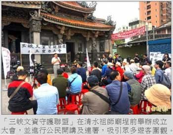

|
 三峽老街口的石板路與鑄鐵地磚日前無預警遭區公所刨除，遭市長朱立倫怒批作為粗暴，為避免憾事再度重演，三峽在地青年、社區人士、文史團隊等，昨天舉辦「三峽文資守護聯盟」成立大會，誓言捍衛地方文資，要求市府恢復原狀。
「街景復舊，安全並重！」聯盟成員們在清水祖師廟埕前高喊口號，並舉行公民開講及連署活動，吸引眾多遊客圍觀，聯盟成員除了在地居民，也有來自桃園、新竹等，老街上更有多位大學生。
聯盟召集人張光驊表示，聯盟有四項訴求：一、 恢復該路段石板與鑄鐵地磚，加入交通安全與整體景觀考量再行施工。二、市府提出事件調查報告並修正錯誤，公佈決策流程及決策者。三、重新規劃三峽老街歷史風貌特定專用區範圍，完善歷史街區管理規範。 四、落實老街徒步區交通管制，加強街區石板路清潔與防滑措施。
李梅樹紀念館主張將老街口恢復原狀，若最終決議改變裝置地點，授權的鐵磚將收回銷毀。三峽區長陳健民表示，最快下週召開會議，以公民參與方式，討論出兼顧文化傳承與民眾安全的補救方式。
回前頁
|